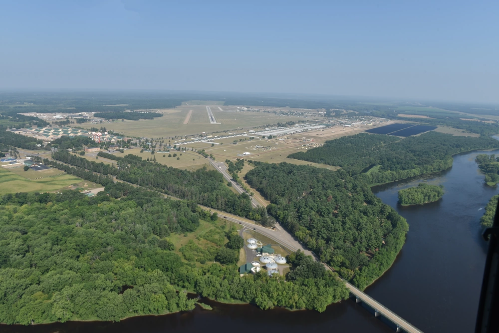
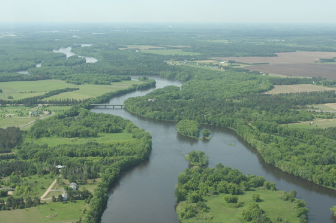
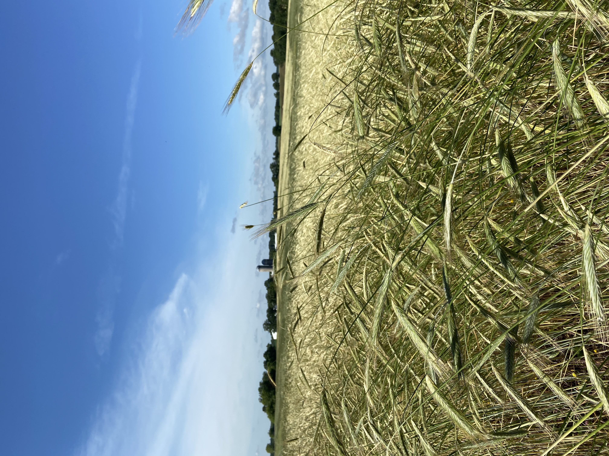
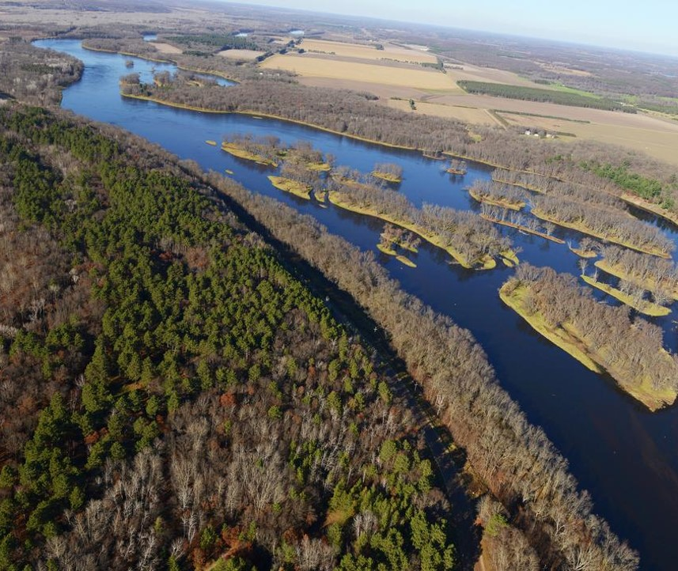
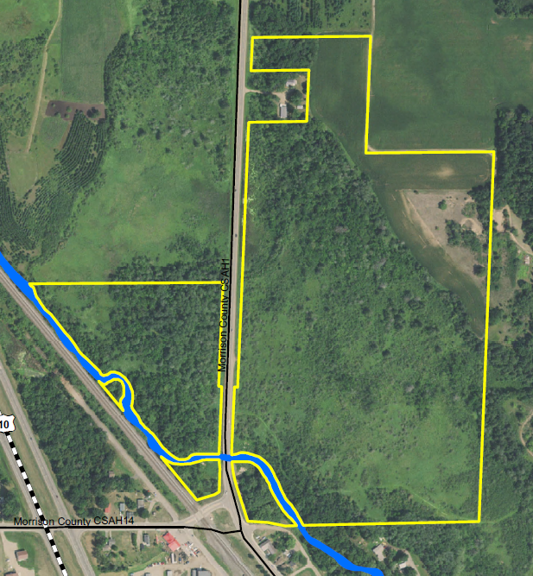
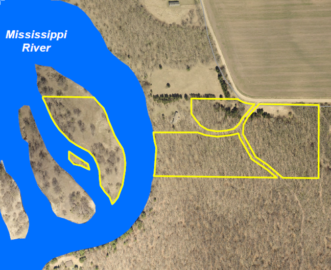
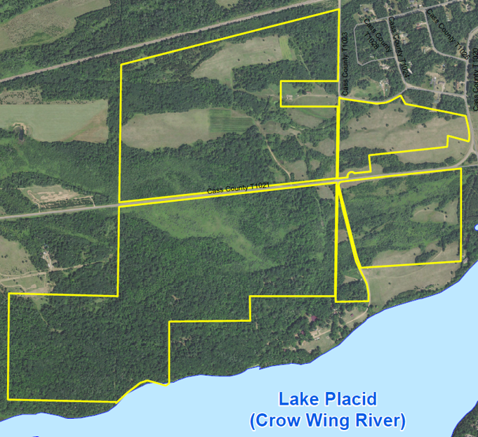
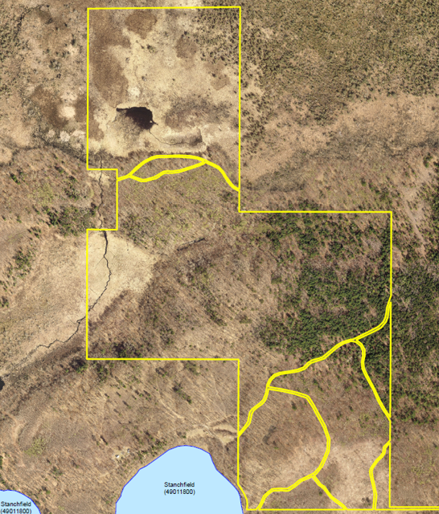

Camp Ripley Sentinel Landscape
Parcel-scale resilience across wetlands, forests, and working lands.
Executive Summary
The Camp Ripley Resilience Scorecard evaluated 8,540 parcels across 131,185 acres within the 3-mile REPI Agreement area to understand how the landscape surrounding the installation responds to drought, extreme heat, riverine flooding, wildfire, and land degradation.
The analysis revealed substantial variation in resilience across the landscape, with stronger resilience associated with intact forests, wetlands, and connected river and riparian systems. These results helped identify resilience anchors and opportunities for protection and restoration and were incorporated into Camp Ripley's easement prioritization process.
To date, 80.4 acres identified through resilience-informed prioritization have been protected, with an additional 506 acres advancing through the easement process.

Why It Matters
Camp Ripley is surrounded by a largely unfragmented landscape of forests, wetlands, rivers, farms, and other working lands along the headwaters of the Mississippi River. These lands provide a critical buffer from development and encroachment while also supporting water resources, wildlife habitat, recreation, agriculture, and local communities.
The same landscape features that support these values also contribute to resilience. Wetlands store floodwater, forests moderate temperature, healthy soils support infiltration and moisture retention, and intact vegetation helps stabilize the land. Together, these natural systems can reduce vulnerability to drought, extreme heat, flooding, wildfire, and land degradation.
For Camp Ripley, maintaining these functions is directly connected to long-term military readiness. Protecting resilient working lands and natural systems helps maintain compatible land use around the installation while strengthening the broader landscape on which the installation and surrounding communities depend.


Reading the Landscape
The next question was how to measure resilience across the landscape. Rather than asking only where hazards occurred, the analysis asked a different question:
Where was the landscape best equipped to withstand them?
Resilience was evaluated through measurable characteristics of the landscape that influenced its capacity to absorb disturbance and maintain function. Indicators related to hydrology, vegetation, soils, topography, land cover, and disturbance were analyzed and summarized at the parcel scale, creating a transparent and repeatable way to compare resilience across the study area.
Each of the 8,540 parcels within the 3-mile REPI Agreement area was evaluated for resilience to five hazards:
Each hazard was evaluated independently, allowing the analysis to capture the different landscape characteristics that contributed to resilience under different types of stress. Together, the five hazard assessments provided a more complete picture of where resilience was strongest, where vulnerabilities were concentrated, and how those patterns varied across the landscape.
Resilience Across Five Hazards
Explore the five parcel-scale assessments that form the Camp Ripley Resilience Scorecard.
Key Patterns
The five hazard assessments revealed distinct but overlapping patterns of resilience across the Camp Ripley landscape.
Higher Resilience
- Water emerged as one of the strongest organizing features across the landscape.
- Higher drought resilience clustered along the Mississippi River corridor and around larger wetland complexes.
- Riverine flooding resilience was particularly strong along the Crow Wing River, Upper Mississippi tributaries, wetlands, and intact riparian areas.
- Intact forests, wetlands, and connected natural systems frequently supported stronger landscape function across multiple hazards.
Lower Resilience
- Lower resilience was more common where natural landscape functions had been disrupted.
- Developed and transportation corridors, urbanizing areas, and fragmented edges emerged as recurring areas of lower resilience.
- Agricultural and developed edges were influenced by impervious surfaces, altered drainage, reduced vegetation, and fragmentation.
- Areas affected by land conversion generally showed greater vulnerability across the landscape.

From Maps to Decisions
The Scorecard translates these patterns into a parcel-scale decision aid, helping partners identify resilience anchors and opportunities for protection or restoration. At Camp Ripley, these results were incorporated into easement prioritization alongside mission needs, conservation priorities, and other local considerations.
At Camp Ripley, the results help identify:
- Resilience anchors where existing landscape function is important to maintain
- Protection opportunities where conservation can preserve resilience
- Restoration opportunities where targeted investment could strengthen landscape function
- Strategic parcels where resilience overlaps with other mission and conservation priorities
From Parcel Scores to Conservation
At Camp Ripley, the Scorecard has moved from analysis into implementation. Resilience results are being used alongside other conservation and mission priorities to inform parcel-level easement decisions. The properties below illustrate how that process is translating resilience information into conservation action.

Forest, wetlands, agricultural land, and riparian habitat combine to support hydrologic function and landscape resilience. The 80.4-acre property has now been protected through an easement.

Forest and riparian habitat along the Mississippi River strengthen connectivity and help maintain resilient river corridor functions.

A large property along the Crow Wing River where forest, riparian, and other natural systems create resilience benefits across multiple hazards.

Wetlands and headwater systems support water storage, landscape connectivity, and ecological function, complementing other conservation priorities.